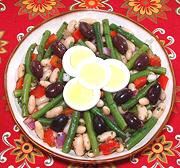

|
Green Bean SaladSpain - Ensalada de Judias Verdes | ||||
| Serves: Effort: Sched: DoAhead: |
7 salad ** 9 hrs Best |
This outstanding salad is quite similar to one by Janet Mendel, but includes kidney beans instead of potatoes. Feel free to use sticks of cooked potato if you wish. If pressed for time, you could use canned beans (see Note-1). | |||
|
|
1-1/2 1/2 ar 1 4 4 2 2 ------ 1/4 1/4 1/4 1/4 1/3 1/4 ------ 2 few |
# T c oz oz cl t --- c c t t t t --- |
Green Beans Salt Water, boiling Kidney Beans, dry (1) Bell Pepper, red (2) Onion, red Garlic Mint, fresh -- Dressing Sherry Vinegar (3) Olive Oil ExtV Oregano, dry Chili Flake (4) Salt Pepper -- Garnish Eggs, hard boiled Olives, Black (5) |
This dish is best made up to a day ahead and refrigerated. Do-Ahead - (9 hrs for dried beans - 10 min work)
|
dgv_gbn1 170207 mks141 - www.clovegarden.com
©Andrew Grygus - agryg@clovegarden.com - Linking to
and non-commercial use of this page permitted